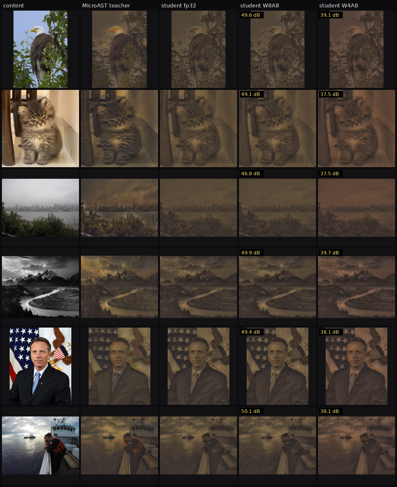

Rows are content images; columns are the content, the MicroAST teacher, the fp32 student, and the exported variants run by the integer reference. Each labelled tile shows its PSNR against that student fp32 render.
